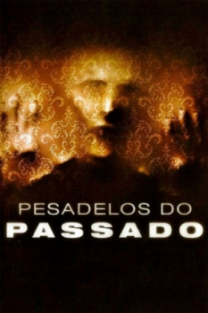

Pesadelos do Passado (2012)


Some doors should never be opened.

Avaliação (TMDb):


5.6/10 (362 votos)
Avaliação (Usuário):
Outro Título:The Pact
País:United States, 89 minutos
Idiomas falados:Inglês, Português
Gênero(s):Terror, Mistério, Suspense
Diretor(s):Nicholas McCarthy
Codec:MPEG-2 (DVD)
Número: 4554
Sinopse:
Após a morte de sua mãe, uma mulher volta à casa onde viveu sua infância e tem que lidar com uma inquietante presença no lugar.
Elenco:
Caity Lotz, Casper Van Dien, Agnes Bruckner, Haley Hudson, Dakota Bright, Samuel Ball, Mark Steger, Kathleen Rose Perkins
Tipo de mídia: DVD5,
Legendas: Português,
Alugado: Não
Tela: 1.85:1